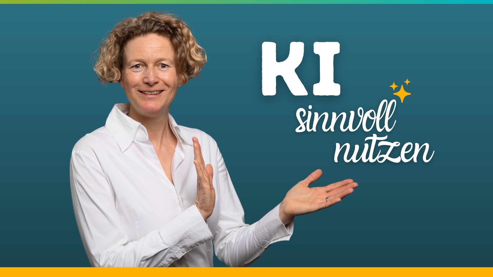

Ein kostenloser Audiokurs in drei Teilen: für alle, die KI führen wollen statt nur zu bedienen.
Jetzt kostenlos eintragen„Bau dir dein KI-Team (für mehr Selbstwirksamkeit)" ist eine dreiteilige Audioserie, in der du dir Schritt für Schritt einen hilfreichen Sparringspartner und ein kleines KI-Team aufbaust, statt dir von der KI die eigene Stimme abnehmen zu lassen. Die ersten beiden Audios holen dich ab, egal ob du KI bisher skeptisch gegenüberstehst oder schon Erfahrung hast, im dritten geht es mit agentischer KI noch einen Schritt weiter, inklusive Prompt- und Fragenlisten für die Praxisteile.
Drei Audios à rund 20 Minuten, macht zusammen anderthalb Stunden für ein erweitertes Verständnis davon, was KI für dich als reife, bewusste Frau leisten kann.
Klärt deinen Blickwinkel auf KI: nicht dein Denken ersetzen, sondern dich als Sparringspartnerin unterstützen. Selbstwirksamkeit als wichtigste Ressource für Solo-Selbstständige.
Ein Ausschnitt aus meinem Deep-Talks-mit-KI-Kurs: Du baust dir mehrere Rollen auf, die dich aus verschiedenen Perspektiven bei Entscheidungen begleiten.
Praktische Beispiele aus meinem Alltag: wie ein geteilter Ordner, verbundene Tools und eigene Skills aus einem Chatbot ein echtes Assistententeam machen.

Seit 13 Jahren führe ich mein Online-Business allein und kenne jeden einzelnen Klick, der dazugehört. Von 2023 bis 2024 war ich als Expertin für Onlinekurse positioniert, dann habe ich die KI für mich entdeckt. Mein Denken wollte ich ihr nie überlassen, ich habe sie mir als Beratungs- und Sparringspartnerin für bewusste Selbstführung eingerichtet.
Seit Anfang 2026 entdecke ich mit agentischer KI, wie sehr das uns Frauen ermutigt, auch mal etwas Unkonventionelles in die Welt zu bringen.
Du bekommst direkt nach deiner Anmeldung Zugang zum kompletten Audiokurs.
Du erhältst passende E-Mails zu diesem Angebot sowie meinen unregelmäßig erscheinenden Newsletter. Du kannst dich jederzeit mit einem Klick wieder abmelden. Mehr dazu in meiner Datenschutzerklärung.